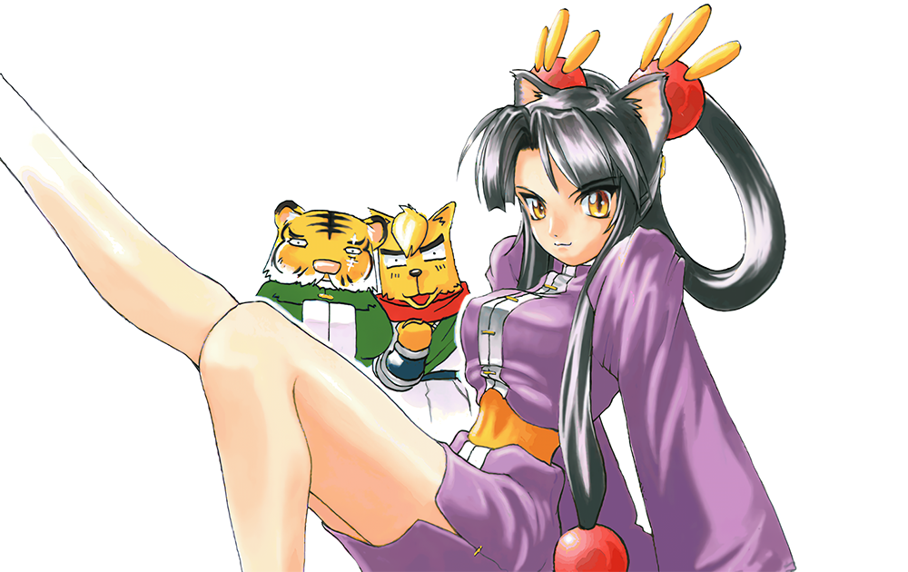

한국어판 개선 패치
환세취호전(幻世酔虎伝, Compile, 1997)의 국내 정식으로 발매된 한국어판을 고치는 패치입니다. 번역을 다듬고, 현행 Windows에서 생기는 문제를 해결했습니다.
이 페이지에서 정식판 파일에 바로 적용할 수 있습니다.

웹 에뮬레이터로 바로 플레이 ▶︎패치 적용
- 게임 폴더의 실행 파일(
HWANSE.EXE또는HWANSE2.EXE)과GENSE.FLD를 백업해 둡니다. - 두 파일을 아래 칸에 놓거나, 칸을 눌러 고릅니다.
- 내려받은 두 파일을 게임 폴더에 넣고
HWANSE.EXE로 실행합니다.
- 파일은 브라우저 안에서만 처리되고, 어디에도 전송되지 않습니다.
- 실행 파일 이름이 달라도 괜찮습니다. 정식판인지는 내용으로 확인합니다.
- 내려받는 파일 이름은 항상
HWANSE.EXE·GENSE.FLD입니다. 원래HWANSE2.EXE였다면 그 파일은 원본으로 남습니다. - 바이트를 직접 고쳐 쓰던 실행 파일도 알려진 수정이면 원본으로 되돌린 뒤 패치합니다.
번역 개선
정식판의 대사와 아이템·기술·장비 이름을 원문(일본어)과 한 줄씩 대조해 고쳤습니다. 정식판 번역을 다듬은 것이며, 새 번역은 아닙니다.
- 오역뜻이 틀리거나 원문과 다른 말이 들어간 대사를 바로잡았습니다."보스를 위해 목숨을 바치는 피래미 주제에" → "그래 봤자 보스의 돌려막기…"「檮杌」 "두개골" → "도올", 획득 금액 "5000Ｇ" → "500Ｇ"
- 뉘앙스원문에 없는 말을 얹거나, 원문의 핵심을 빠뜨린 번역을 원문 쪽으로 되돌렸습니다."실용성은 왕따봉！" → "실용성은 대폭상승"「立派な患者じゃよ」 "환자라구！！" → "어엿한 환자라구"
- 표기같은 대상을 장면마다 다르게 부르던 것을 통일하고, 외래어 표기와 오탈자를 고쳤습니다.
- 말투인물마다 말투를 정리했습니다. 린샹은 상대에 따라 존대·반존대·반말을 씁니다.스마슈가 아타호에게 존댓말을 쓰던 오류도 고쳤습니다.
- 그래픽대회 장면의 "결봉전"을 "차봉전"(次鋒戦)으로 고쳤습니다.
GENSE.FLD에 들어 있는 글자입니다.
대사 길이는 원본과 같습니다. 늘릴 자리가 없어 조사·어미로 맞췄습니다.
호환성 패치
실행 파일 하나로 Windows 95/98과 XP~11을 모두 지원합니다. 기술 창 수정을 빼면 모두 XP~11에만 적용되고, 95/98에서는 원본과 똑같이 동작합니다.
- 기술 창스테이터스 창에서 기술을 볼 때 튕기던 문제를 고쳤습니다.기술의 MP 소비량을 엉뚱한 곳에서 읽던 버그입니다. 95/98에서는 같은 버그로 MP 부족 표시가 MP와 상관없이 나왔는데, 이것도 함께 바로잡혔습니다.
- 글자글자 크기와 간격이 원래대로 나옵니다.XP~11은 굵은 글꼴을 95/98과 다르게 처리해 글자 칸이 넓어졌습니다. XP~11에서만 글꼴 값을 조정해 95/98과 같은 칸으로 맞춥니다.
- 창 모드원래 게임에 없던 창 모드를 새로 넣었습니다.Alt + Enter로 창 모드와 전체 화면을 오갑니다. 게임은 늘 전체 화면으로 시작합니다.
- Alt + Tab전체 화면에서 나갔다 돌아와도 화면이 검게 남지 않습니다.창을 전환하는 동안 게임이 그려 둔 화면 내용이 지워지던 문제입니다. 내용이 지워지지 않는 메모리에 두고, 돌아오면 화면 전체를 다시 그립니다.